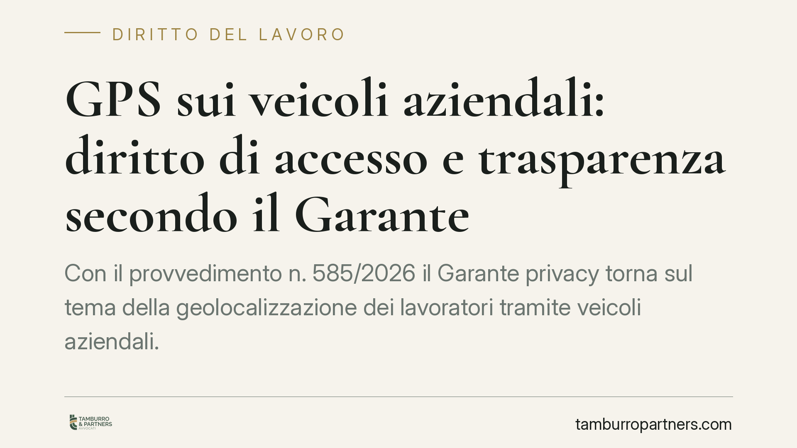

GPS sui veicoli aziendali: diritto di accesso e trasparenza secondo il Garante
Con il provvedimento n. 585/2026 il Garante privacy torna sul tema della geolocalizzazione dei lavoratori tramite veicoli aziendali. Due i punti chiave: il diritto del dipendente ad accedere ai propri dati di posizione e gli obblighi di trasparenza che gravano sul datore. La decisione ridefinisce il perimetro di un controllo oggi diffusissimo nelle flotte aziendali.

Il caso
Il Garante per la protezione dei dati personali è intervenuto su una vicenda ricorrente: un lavoratore chiede al datore di accedere ai dati di geolocalizzazione raccolti dal GPS installato sul veicolo aziendale assegnatogli. Il datore oppone resistenza, invocando esigenze organizzative o la natura "di servizio" del dato.
Il provvedimento n. 585/2026 ribadisce che quei dati sono dati personali del lavoratore e che il diritto di accesso previsto dal Regolamento (UE) 2016/679 (GDPR) opera a pieno titolo, salvo i limiti tassativi di legge.
Inquadramento normativo
La geolocalizzazione tramite veicolo aziendale si colloca all'incrocio tra due discipline.
La prima è l'art. 4 della legge n. 300/1970 (Statuto dei lavoratori), che regola i controlli a distanza. Gli strumenti dai quali possa derivare un controllo dell'attività del lavoratore sono ammessi solo per esigenze organizzative, produttive, di sicurezza o di tutela del patrimonio, e richiedono accordo sindacale o autorizzazione dell'Ispettorato del lavoro. Resta fermo l'obbligo di informare adeguatamente il lavoratore sulle modalità d'uso e di controllo.
La seconda è il GDPR. L'art. 15 riconosce al lavoratore il diritto di ottenere conferma del trattamento e l'accesso ai dati che lo riguardano, comprese le finalità, i destinatari e il periodo di conservazione. Gli artt. 12, 13 e 14 impongono al titolare un'informativa chiara, trasparente e facilmente accessibile.
Il Garante chiarisce che il diritto di accesso non può essere negato con motivazioni generiche. Il titolare deve riscontrare la richiesta nei termini, individuando con precisione quali dati esistono, per quanto tempo sono conservati e a chi sono comunicati.
Implicazioni pratiche
Per il datore di lavoro il messaggio è netto: installare un GPS non basta averlo autorizzato. Serve una filiera di trasparenza coerente e documentata.
In concreto, il datore deve essere in grado di ricostruire, su richiesta, il trattamento dei dati di posizione di ogni singolo lavoratore. Questo presuppone sistemi che consentano l'estrazione selettiva dei dati, tempi di conservazione definiti e un'informativa aggiornata.
Il punto più delicato riguarda la conservazione. La geolocalizzazione in tempo reale e lo storico degli spostamenti sono trattamenti distinti: il secondo richiede giustificazioni più stringenti e tempi di conservazione contenuti. Conservare mesi di tracciati senza una ragione precisa espone a contestazioni.
Per il lavoratore, il provvedimento rafforza una tutela effettiva. Chi guida un veicolo aziendale può chiedere di sapere se e come viene geolocalizzato, per quali finalità e per quanto tempo restano i suoi dati. Un diniego immotivato è illegittimo e può essere portato al Garante.
Va ricordato che il diritto di accesso ha finalità di controllo sul trattamento. Non è uno strumento per ottenere, ad esempio, prove da usare in altri contenziosi in modo distorto; ma il suo esercizio corretto non può essere ostacolato.
Cosa fare in concreto
- Datori di lavoro: verificate che l'installazione del GPS sia coperta da accordo sindacale o autorizzazione dell'Ispettorato e che l'informativa ex artt. 13-14 GDPR sia completa e consegnata ai lavoratori.
- Datori di lavoro: definite e documentate per iscritto i tempi di conservazione dei dati di posizione, distinguendo tra tracciamento in tempo reale e storico degli spostamenti.
- Datori di lavoro: predisponete una procedura interna per riscontrare le richieste di accesso nei termini di legge, con la possibilità di estrarre i dati del singolo lavoratore.
- Lavoratori: se ritenete di essere geolocalizzati, chiedete per iscritto l'accesso ai vostri dati indicando le informazioni previste dall'art. 15 GDPR.
- Lavoratori: in caso di diniego o silenzio, valutate il reclamo al Garante o la segnalazione all'Ispettorato del lavoro.
Conclusione
Il provvedimento n. 585/2026 non introduce regole nuove, ma ricorda che la geolocalizzazione aziendale resta un trattamento ad alto impatto. Trasparenza, limiti di conservazione e riscontro effettivo alle richieste di accesso sono i tre presìdi su cui si misura la correttezza del datore. Consigliamo di rivedere per tempo informative e procedure interne, prima che sia una contestazione a imporlo.
---
*Contributo informativo a cura di Tamburro & Partners - Avv. Giuseppe Tamburro. Non costituisce parere legale.*
Ogni storia di lavoro ha i suoi tempi.
Se gestisci HR e vuoi un confronto su contenzioso, ispezioni o licenziamenti, scrivi allo studio. Ti rispondiamo entro un giorno lavorativo.